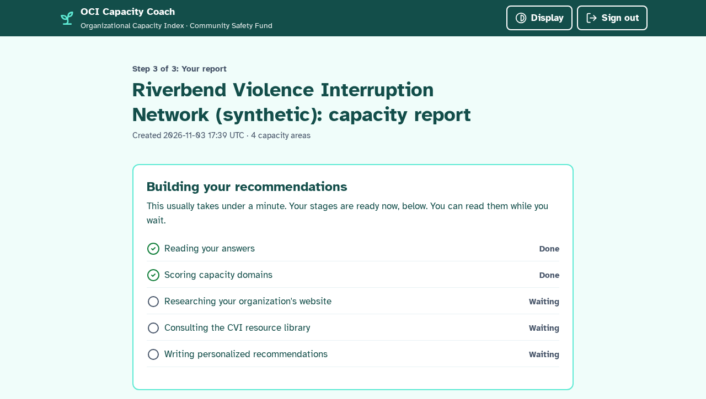
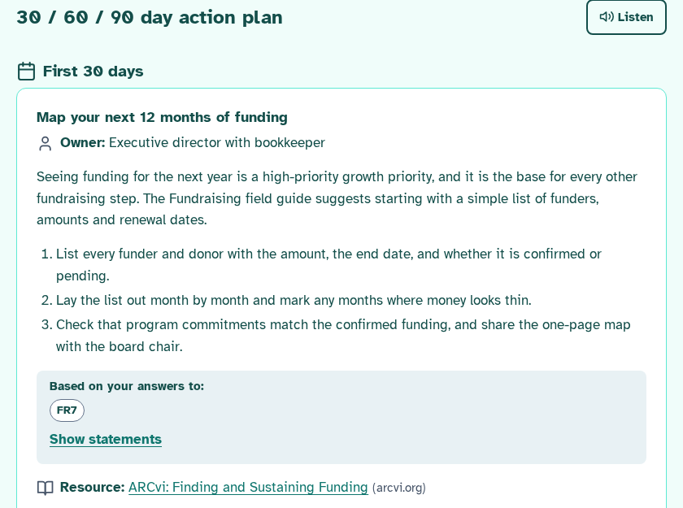

Who we serve
A learning tool, not an evaluation

Results lead with a stage ladder. Gaps are called growth priorities. Every stage is a normal place to be.
Live demo
From answers to an action plan in under a minute

Answer. One area per screen, Yes or No. Choose which areas to assess today.

Watch it work. Scores appear instantly. The full AI report is ready in 38 to 47 seconds.

Act. Each action has an owner, cites the answers behind it and links a vetted resource. PDF in one click.
User interface and design
Accessibility is the feature, not a checkbox
WCAG 2.2 AA
axe-core finds no A or AA violations on any page.
Atkinson Hyperlegible
A typeface designed for low-vision readers.
Larger text, high contrast
One Display menu, remembered on the device.
Read aloud
Listen to any section of the report.
Reports in Spanish
AI text carries lang="es", so screen readers switch voice.
Mobile ready
44 px targets, one area per screen, PDF with bookmarks.